<<2014年3月 | トップページ | 2014年5月>>
2014年4月
未来の遊び大予想［原田明莉］
お空にお絵かき
Hello！
原田明莉でーす！
未来の遊びの、予想をしてみます?
私が、考えたのは・・・・・・
★空に書けるペン★
です！
どうやって遊ぶ道具かというと、
空に向かい、空中に、絵が書けるペンなの♪
まぁ今で考えてみるとー
チョークって感じかな？
チョークは、地面に書きますねー。
未来では、空中に絵が書けるんです??
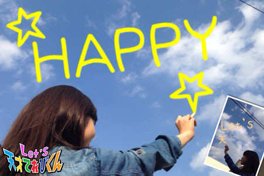
いいな♪♪
絶対、空に書ける絵なんて、はまりそー
っでも、雨が降ったり、天候が、悪い時は、どうすんのー？？
もちろん、そのまま外で、遊んじゃいけまっせん。
だって、今でいうと、チョークみたいなものだから、雨の時遊ぶと、とけちゃいます！
なので、室内の空中で遊んでね！
あと、自分も風邪ひいちゃうょ♪
気をつけてねぇ！
あっ
もしかしたら、未来人の、大野さん達は、この遊びがあるかどうか分かんのかなー?
できててほしいなー♪
★バイバイ★
投稿者:原田明莉 | 投稿時間:18時45分 | カテゴリ：てれび戦士 | 固定リンク
未来の遊び大予想［辻村晃佑］
どうも辻村晃佑です。
みなさんおはようございます。
こんにちは。
こんばんわ。
みなさんぼくの名前はおぼえてくれましたか？
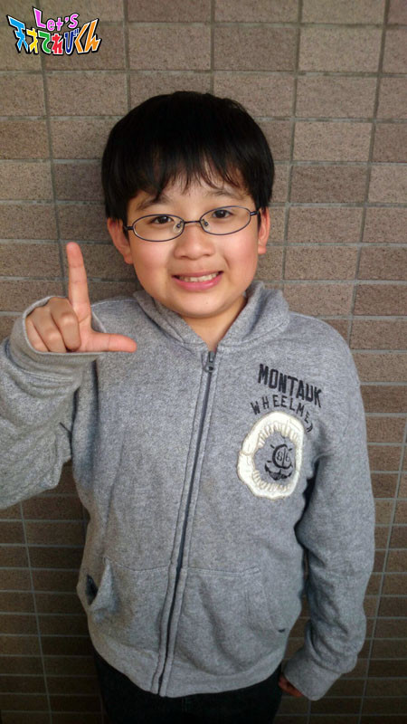
まぁそれはおいといて
今回のテーマは、未来の遊びですね！
う～ん
いろいろ考えるけど、やっぱり未来でもはやってるのはスポーツですかね。
ぼくはテレビで野球を見るのが大好きで、やるのも大好きです。
小学校の時の休み時間はよく友だちと野球をしてました。
たのしかったなぁーーー
だから未来の遊びでもスポーツがはやってると思います。
未来だから空中を使うかもしれないな。
空中を使ったフライングサッカーとかはやっていると思いますね。
空を飛ぶ車のレースとか、未来では何でも空を飛びそうですね。
移動とかも空を使った乗り物なんだろうなぁーー
話がすごいそれましたねww
でもこれが全部できるのは、きっとぼくがおじいちゃんになっているころだろうなぁーー
でもぼくも空で遊びたいなぁーー
投稿者:辻村晃佑 | 投稿時間:18時45分 | カテゴリ：てれび戦士 | 固定リンク
未来の遊び大予想［齋藤茉日］
だんだん暑くなってきたねー
まひるです！！
回のテーマは未来の遊び大予想！！
そして茉日は考えた！！、、、
大野課長って面白いですよね？
大野課長って子供の頃どんな遊びをしていたんだろ？
2014年の今とあんまり変わんなかったりして？(･･;)
・・・・
大野課長→面白い(⌒▽⌒)
遊び→おもちゃ
最近発展しているもの→、、、ロボット
うーん、 ？？？ わかった？？？
『おもしろ回答ロボットおもちゃ？？？』
こんなのありそうじゃないですか？いいですね未来！
未来から課長たちが来るんじゃなくて、私たちが未来におじゃましたかったですよ？？
最初は、未来人って聞いて怖かったですけど(⌒-⌒; )
お話ししてくれるロボットって楽しそう！私お話し大好き(^o^)
私の、このロボットの理想は、ボケをしたらツッコミされたり、
明日は、誰に会う？どんな会話を誰とする？とか言っても
未来的なこともわかるかしこいロボットとかいいんじゃない？？（＾Ｏ＾☆♪
見た目も面白いこんなロボットなんてどう？
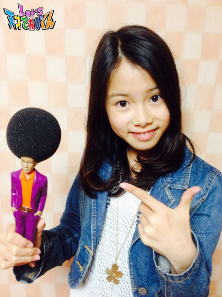
みんなは最近どんな話した？
たくさんお話して、どちゃもんとの信頼を深めよう！
投稿者:齋藤茉日 | 投稿時間:18時45分 | カテゴリ：てれび戦士 | 固定リンク
未来の遊び大予想［小西憧弥］
こんにちは(^O^)憧弥です。
生放送のときの変顔は、学校の友達に笑われました。
でも見てくれてるんだと思うと、うれしかったです。
勉強も遊びも異次元獣との戦いもがんばるぞ～！
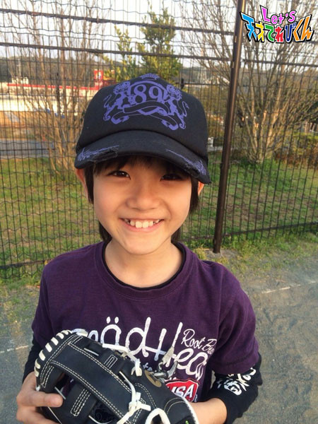
未来の遊び大予想！！
【女の子】
250年後には、「魔女のほうき」という空飛ぶおもちゃが売り出されてて、
子供も簡単に乗れて大人気になってます。
おそうじにも使えて、空も飛べて、バッテリー切れなし。
しかもちりとりとナビ付き☆
色も自分の好きなようにぬれるから、世界に一つだけ(*^^*)
【男の子】
男の子は、「空飛ぶスケボー」というおもちゃが売り出されてます。
空も飛べて、雪もすべれる。
ライトが付いてて、暗くなっても安心。
もちろんエンジン付きだから、坂道もぐんぐんのぼれます。
それにどんな人がのっても落ちない安全装置付き！
そんなスケボーできたら、憧弥も絶対絶対サンタさんに頼むのにな（≧∇≦）
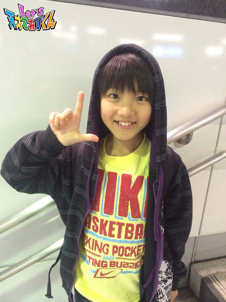
投稿者:小西憧弥 | 投稿時間:18時45分 | カテゴリ：てれび戦士 | 固定リンク
未来の遊び大予想［桐畑カレン］
○未来○
「今日はどこに行こうかなあ。」
私が乗っているブランコは目をつぶって心の中でおねがいしながら、
たくさんたくさんこぐと（大体30回くらい）空に連れていってくれます。
空に着いたら、同じようにブランコで空まで来たお友達がたくさんいます！
みんなちがう公園のブランコから遊びに来ているから、
私達はさそいあいながら、いろんな公園をぼうけんします。
それはとっても楽しいです。
公園から公園をいどうする時は、雲にブランコをつりさげていどうします。
下を見るとちょっとこわいけど、でも気分そうかいです!!
○今○
私はブランコが大好きです。
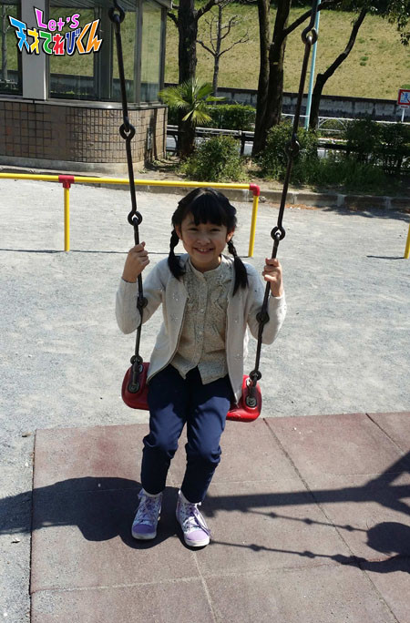
ブランコは学校でも公園でも人気があって、
いつもじゅん番待ちの列ができています。
こんなブランコが未来にあったら、うれしいけど、
もっと長い長い列になるんだろう
なあ…と心配になります。でもやっぱりすてきだなと思います！
投稿者:桐畑カレン | 投稿時間:18時54分 | カテゴリ：てれび戦士 | 固定リンク
未来の遊び大予想［笹原尚季］
ぼくは動物が大好きです。
この前、友達の飼っているイヌのさくらと遊びました。
たくさんなでて、一緒に遊びました。
とってもとってもかわいかったです。
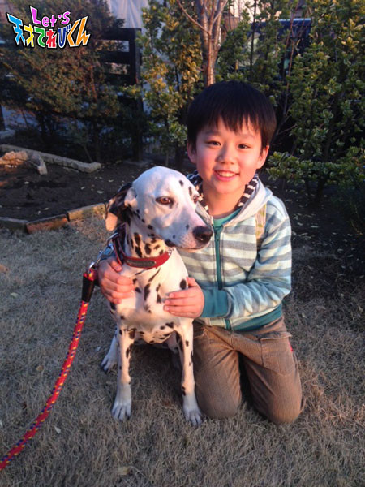
でも、悲しそうな目をしていた時があり、
何とかしてあげたかったけれど、
犬の言葉がわからないから解決してあげられませんでした。
だから、ぼくは未来にこういう物があったらいいなと思いました。
それは、まほうの（動物）着ぐるみ！
例えば犬の着ぐるみを着たら、犬の言葉がわかるようになり、
犬の言葉がしゃべれるようになって（ワン♪）
すごく仲良くなれて、一緒にボール遊びとか追いかけっこができます。
他の動物（「りす」や「こぐま」）の着ぐるみを着れば、
その動物としゃべれるようになります。
ぼくの未来では、動物と一緒におしゃべりしたり、仲良く遊ぶことが大流行です。
投稿者:笹原尚季 | 投稿時間:18時45分 | カテゴリ：てれび戦士 | 固定リンク
未来の遊び大予想［杉本瑛］
私が今ハマっている遊びは百人一首です。
ゲームも大好きですけど、
百人一首は独特の季節、人の気持ち、世界観があって
とても楽しいんです。
そこで私が考えたのは
あえてなんでもマジックハンドでするという遊びです。
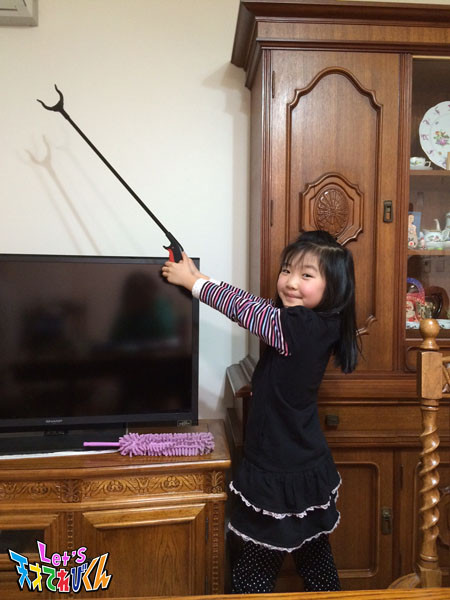
どういうことかと言うと、
今の時代で昔の道具（カルタ、こま、タコ）を使って
遊ぶのと同じような感覚で、
昔の道具を使ってなんでもするということです。
未来はもっとハイテクだと思うので、
マジックハンドを昔のテクノロジーで
出来ている物と考えて下さい。
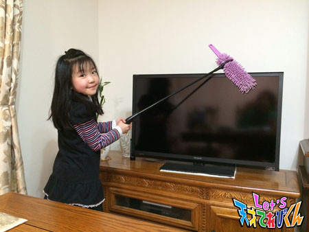
やってみました。（お掃除バージョン）
投稿者:杉本瑛 | 投稿時間:18時45分 | カテゴリ：てれび戦士 | 固定リンク
未来の遊び大予想［小澤竜心］
未来は、人が、自由に空を飛べるようになっているかもしれないなぁ…。
小学生は、ジェットつきのランドセルで学校に行って、
休み時間は友だちと、「空中ドッジボール」をして遊びます。
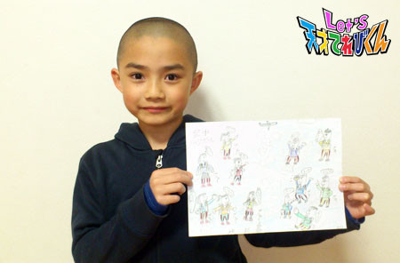
雲で線を引いて、じん地を作ります。
いろいろな方向から攻撃をしたり、
あちこち飛びまわりながら逃げたり、
すごく盛り上がって、楽しいドッジボールになりそうです。
でも、ボールはどうしたらいいのでしょうか…？
きっと、すごい博士が「空中ドッジボール専用ボール」を発明してくれると思います。
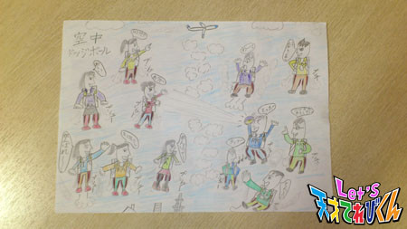
空中ドッジボールを、てれび戦士のみんなとやったら、
とても楽しいんだろうなぁと思いながら、この絵をかきました。
みんなに楽しさが伝わったら、うれしいです！
投稿者:小澤竜心 | 投稿時間:18時45分 | カテゴリ：てれび戦士 | 固定リンク
未来の遊び大予想［赤崎月香］
こんにちは ヽ(^▽^@)ノ
赤崎月香（あかさき つきか）です。
すっかり春ですね～
わくわくします ((o(*^^*)o))
☆。・:*:・°★,。・:*:・°☆
中学生になりました♪
新しい制服を着て学校へ…
ドキドキわくわくしました ((o(б_б;)o))
中学生になったら、勉強が難しくなるし、部活もあるし、
大丈夫かな？！
不安もあるけど、頑張ろうと思います！ (*￣0￣*)ノ
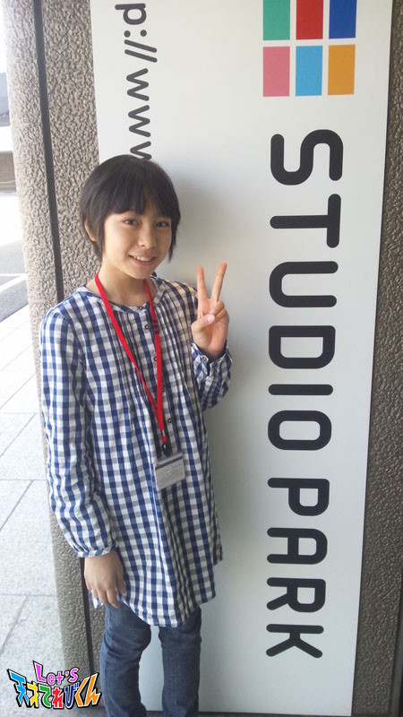
☆。・:*:・°★,。・:*:・°☆
あっっっ！！！ そうそう！！！
不安なひとつがコレ！！！
本気で悩んでいるのですが・・・
夜９時になったら寝てしまうんです (-_-;)
調子が良ければ、10時まで起きていられます！←絶好調☆
調子が悪ければ、8時40分ごろ うとうと(-.-)Zzz←ほとんどこっち
中学生になったので、夜更かしの練習始めます！！！
夜更かしするいいが方法があれば、教えてください 八(^□^*)
☆。・:*:・°★,。・:*:・°☆
さて、未来の遊び大予想！
未来の子どもたちって、どんな遊びをしているのかな？
わたしの予想はね♪
「世界オニごっこ」
どんな遊びかと言うと、未来には、空に道ができていて、
その空の道は、動く歩道みたいになっていて、
めちゃめちゃ速くて、日本の反対側にあるブラジルまですぐ行けるんだ～
世界のどこへでも行けるの！
世界中のみんなと遊べるね (^_-)---☆
本当にこんな遊びができたら、
夜9時に寝てる場合じゃないねーーー ΣΣ(￣◇￣;)!
大好きな飛行機もいらなくなっちゃうじゃん！ ダメダメ！
未来ってどんな感じなのか？
大野課長と虎南分析官に聞いてみたいと思います (*￣▽￣*)ノ
☆。・:*:・°★,。・:*:・°☆
またね～ ヾ(*'-'*) つきか
投稿者:赤崎月香 | 投稿時間:18時45分 | カテゴリ：てれび戦士 | 固定リンク
未来の遊び大予想［瀧澤翼］
今回は未来の遊びについて予想しました。
どんなキャラクターのカードゲームでも、
カード同士が戦うときに、カードからキャラクターが3Ｄで浮き上がります。
目の前で戦っている姿を見たら、
迫力があってすごく盛り上がりそう。
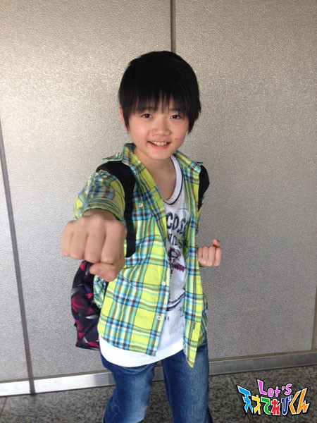
大野課長がいた未来には、こんな事が出来るのかなぁ？
投稿者:瀧澤翼 | 投稿時間:18時54分 | カテゴリ：てれび戦士 | 固定リンク
未来の遊び大予想［飯島緋梨］
緋梨は雪が大好きです。
でも冬にしかふりません。
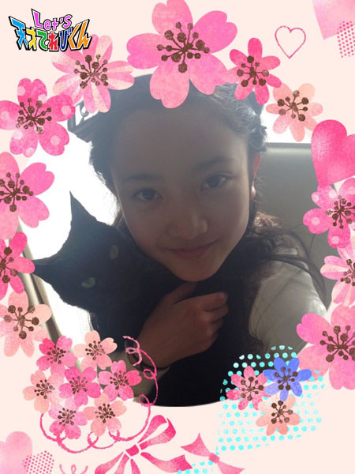
でも未来ではいつでも雪をふらせる事ができて
転ばないスキーを履いて、「氷おに」で遊べます。
未来での「氷おに」はケータイを持って
特殊な手ぶくろをはめて「氷おに」をします。
おにが手ぶくろをはめてタッチすると
タッチされた人が本当に凍ってしまいます。
でも大じょうぶ。
ケータイでまわりの風景を撮影して
仲間に助けにきてもらいます。
今、学校ではやっている「氷おに」が未来では
さらにパワーアップしてすごく広い所で
楽しくできます。
こんな未来になったらいいなと思います。
投稿者:飯島緋梨 | 投稿時間:18時45分 | カテゴリ：てれび戦士 | 固定リンク
未来から来ました［大野拓朗課長］
はじめまして！
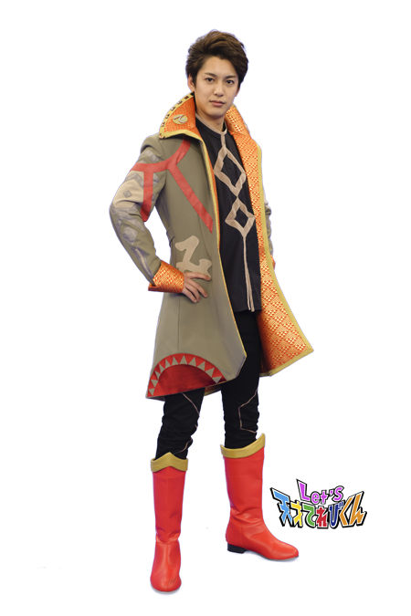
はじめまして、茶の間戦士諸君。
「異次元獣対策センター・時空関係調整課」課長の大野拓朗だ！！
今日は早速、私のデータを伝えよう。
好きな言葉……「全速前進」「全力疾走」「完全燃焼」
趣味……バスケットボール、キックボクシング、ドライブ、読書、動物と戯れる、一人でお酒を飲む
実は今日も、現代の渋谷にある行きつけの店で飲んでいた！！
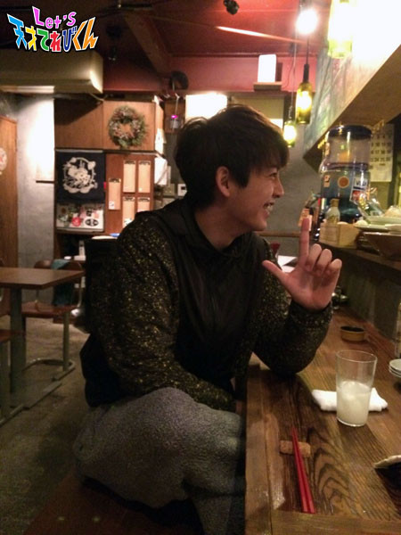
仲良しの店員さんとも写真を撮ってきたぞ！！
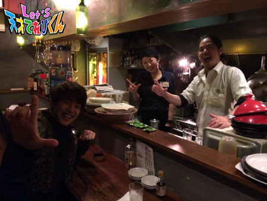
Let'sの輪を広めようキャンペーンをひとりでしてきたぞ！！
みんなの笑顔を守るため
異次元獣から世界を救うぞ！！
Let's！！！
虎南分析官！
さて。今回は虎南分析官を私なりに分析してみた。
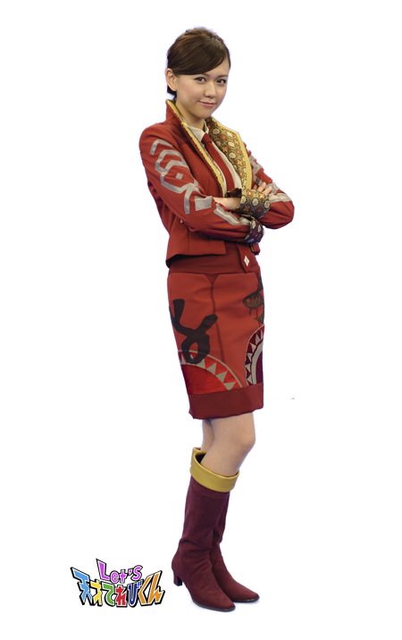
虎南分析官は、私の知人に似ているため、初めて会ったときから、すごく親近感が沸くんだ。
だから私としては仲良くやりたいのだが、どうしてだかいつも冷たい目で見られてしまう……
そして叱られてばっかりだ！！
そんな虎南分析官も、てれび戦士や茶の間戦士のみんなには
とても優しい笑顔で接している。
なぜ私にだけ！！！
しかしまあ、叱られるのも悪くはないが・・・((笑))
虎南分析官は、分析してきた難しいデータを
いつもきちんと覚えていて、正確に私たちに伝えてくれる。
世界を救うため一生懸命なんだな。
私自身、虎南分析官には助けられてばかりだ。
これからも私のことを……じゃなかった、
てれび戦士や茶の間戦士のことを助けてやってくれ！！
今後ともよろしくなっ
投稿者:大野拓朗課長 | 投稿時間:18時45分 | カテゴリ：未来人 | 固定リンク
未来から来ました［虎南有香分析官］
はじめまして！
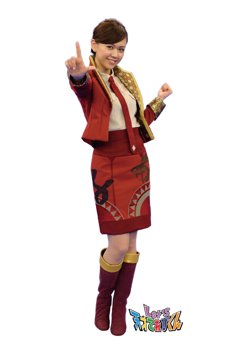
特定脅威分析官の虎南です！^ ^
てれび戦士からは、「虎南さん」「虎南分析官」と呼ばれています。
茶の間戦士のみんなはどう呼んでくれるのかな？？
まだまだ「Let's天才てれびくん」がはじまったばかりなので、
私の事も良く知らないですよね。
何から知ってもらおうかしら。^ ^
まずは好きな食べ物かな？笑
好きな食べ物は納豆！毎日食べてますよ！
そして、誕生日は7月10日、納豆の日！☆
血液型はO型！
簡単なプロフィールはこんな感じかな？
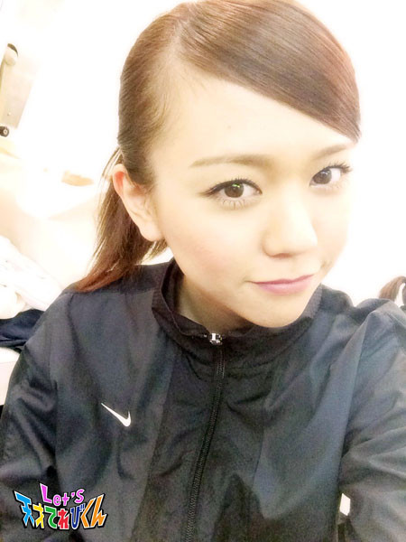
これからもっともっとみんなに私の事を知ってもらえるといいな☆
どうぞよろしくお願いします！
大野課長！
大野課長はいつも元気！って感じですよね。笑
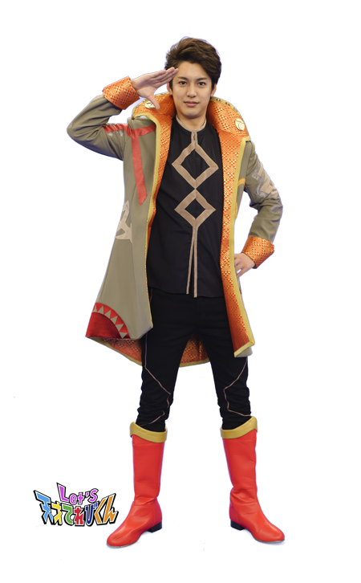
少し変な事を言っててれび戦士から、「課長～！」と怒られている場面もしばしば。笑
でも実はその元気な大野課長から、私も元気をもらっています^ ^
ちょっとおバカなイメージの課長ですけど、普段は…いや…普段からも…(？)全力な人！
てれび戦士からも大人気！！いつもみんなを笑わせてくれて、
明るく、楽しい現場になってます！
これからもよろしくお願いします♪
投稿者:虎南有香分析官 | 投稿時間:18時45分 | カテゴリ：未来人 | 固定リンク
新てれび戦士参上！［笹原尚季］
はじめまして！
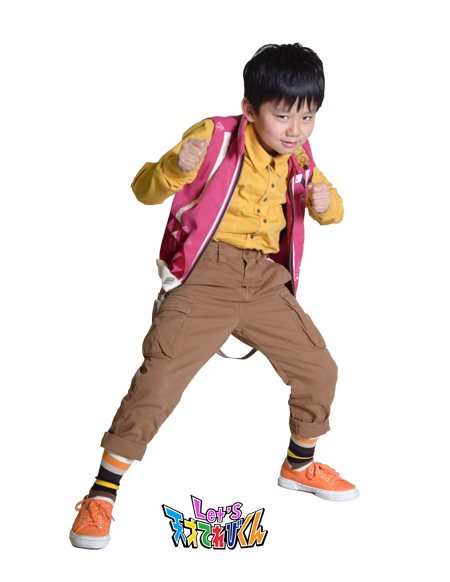
はじめまして。笹原尚季（ささはら・なおき）です。
新てれび戦士として決まり、とても嬉しいです。
今までやったことのない経験ばかりで、驚きの毎日ですが、
元気に、明るく、楽しい番組をみんなで作っていけたらいいと思います。
いつも見ていた番組に出演できるので、とてもはりきっています。
ぼくの得意なそろばんの計算は、いつ活かされていくのか、楽しみです。
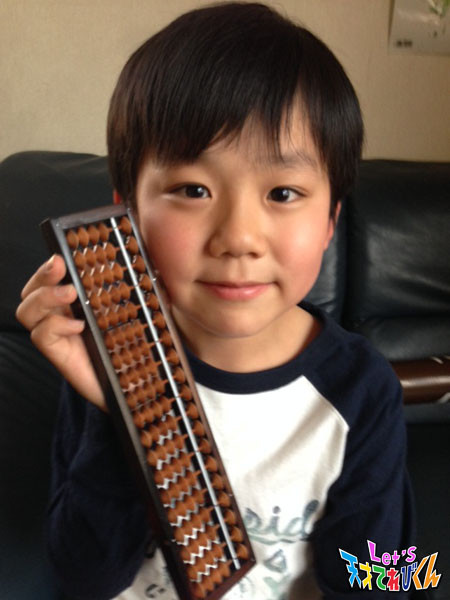
これから1年間、Let's天才てれびくんを見て下さっている
皆様の応えんをパワーにかえて、がんばりたいと思います。
どうぞよろしくお願いします♪
てれび戦士の第一印象
赤崎さんに初めて会った時、とても落ち着いた人だと思っていました。
一緒にいる内に、ちょっとちがった事が分かってきました。
すごく元気で、意外と好きなマンガやゲームが同じだったりして、
気が合ってとても仲良くなれました。
ぼくのお兄ちゃんと同じ歳なので、
すごく親しみやすいです。
いつもニコニコ優しい人です☆
投稿者:笹原尚季 | 投稿時間:18時45分 | カテゴリ：てれび戦士 | 固定リンク
新てれび戦士参上！［杉本瑛］
はじめまして！
はじめまして。杉本瑛（すぎもと・あきら）です。
北京生まれですけど、パパの仕事で中国に住んでいる時生まれただけで、
パパもママも日本人です。
でも中国生まれなので大好物はギョーザと北京ダックとマンゴープリンです。
ステーキも。
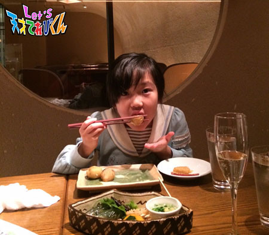
特技はマリンバとモノマネです。
マリンバは家の音楽室にあります。もともとパパがマリンバをしていて、
私もパパに教わって始めました。今でも一緒に発表会に出ています。
モノマネは自分で作った大阪のオバチャンネタを中心にやっています。
趣味は本を読むこと、旅行です。
みんなにニコニコ笑ってもらえるように一生けんめいがんばります。
てれび戦士の第一印象
笹原尚季くんの第一印象はとってもぷくぷくしていて
かわいいな、おとなしそうな子だなと思いました。
でもしばらく一緒にいるとすごくおしゃべりな子だなと分かりました。
気になったのは毎回飲み物や食べ物をこぼして
衣装さんにしかられていることです。
私が笹原くんのスゴイなと思うことは、私たちくらいの歳になるとまわりの目を気にして
自分の好きな物に手を出せないけど、笹原くんは気にせず
自分の好きなキャラクターの物を持っていることです。
特に私がいいセンスだなと思ったのが鳥のスマホケースです。
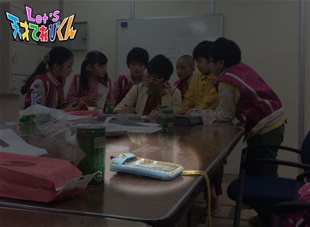
そのスマホケースは青い鳥のポーチタイプで、上に目、口、鼻があります。
まわりは黄色とピンクの水玉もようです。
笹原くんは自分が持っている物は全部自分でえらんでいると言っていました。
私は笹原くんにいつまでも変わらないでそのままでいてほしいです。
投稿者:杉本瑛 | 投稿時間:18時54分 | カテゴリ：てれび戦士 | 固定リンク
新てれび戦士参上！［小澤竜心］
はじめまして！
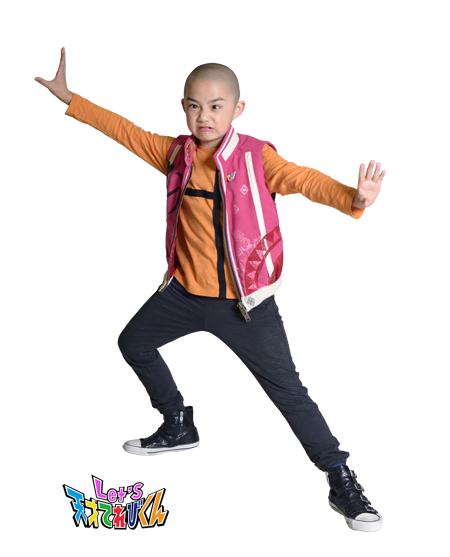
はじめまして！！小澤竜心（おざわ・りゅうしん）です。小学4年生です。
ぼくの得意な教科は図工です。絵をかくことや工作が好きです。
大好物はお肉で、甘いものが苦手です。
特技はダンス、少林寺拳法です。そして、歌舞伎が大好きです。
くまどりをした役者さんが、大きく見得をきるところが最高で、思わずまねをしてしまいます。
ぼくの図工の作品です。
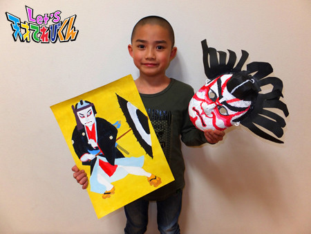
「助六」の絵は、夏休みの作品。張子のお面は「鎌倉権五郎景政」です。
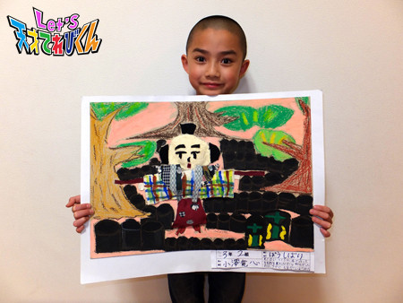
「棒しばり」の絵は、布の変身で作りました。
歌やおどり、おしばいを見るのも、するのも楽しくておもしろいです。
てれび戦士になれたことで、いろいろ体験をしたり、挑戦したりできるので楽しみです。
たいへんなこともあるかもしれませんが、みんなで協力して、一所けん命がんばります。
てれび戦士の第一印象
杉本瑛さんの第一印象です。
はじめて会った時は、おとなしい感じの女の子だなあ、と思いました。
でも、お話をしてみたら、大阪弁で楽しくおしゃべりしてくれる、
やさしい子でした。
いつもまわりをよく見て、注意をしてくれるしっかり者の杉本さんを、
みなさん、よろしくおねがいします！！
投稿者:小澤竜心 | 投稿時間:18時45分 | カテゴリ：てれび戦士 | 固定リンク
新てれび戦士参上！［桐畑カレン］
はじめまして！
こんにちは。桐畑カレン（きりはた・かれん）です。
今年のお正月からカレンかるたを作りはじめたんです。
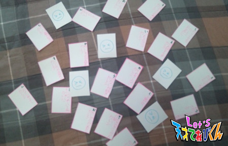
カレンかるた
自分のいい所と悪い所の2種類です。
いい所かるたを全部使って、自己紹介しようと思ったけど、
書ききれないし、「いい所だけ知ってもらうなんてずるい！」と
家族に言われたので、2つをまぜて自己紹介します。
【き】もちの切りかえが早い（くよくよしない）
【り】くつっぽい（屁理屈って言われます）
【は】や起きが得意（休日だけです）
【た】まごが苦手（食べれない演技をして怒られます）
【か】わいいものが大好き（きらきらしたものやリボンが大好き）
【れ】んらく帳だけとてもていねいに書く（ていねいに書くと先生がはなまるをくれます。それがとてもうれしいです）
う【ん】どうがすごくすごくすごく苦手（できなくてもがんばります）
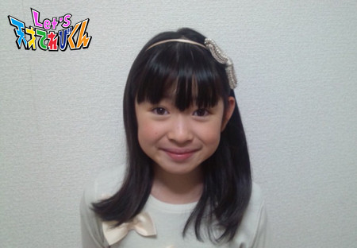
こんな私だけど、よろしくおねがいします。
てれび戦士の第一印象
「すいこまれる～！！！すっごく目がキラキラしてる！」
小澤竜心君をはじめて見た時にそう思いました。
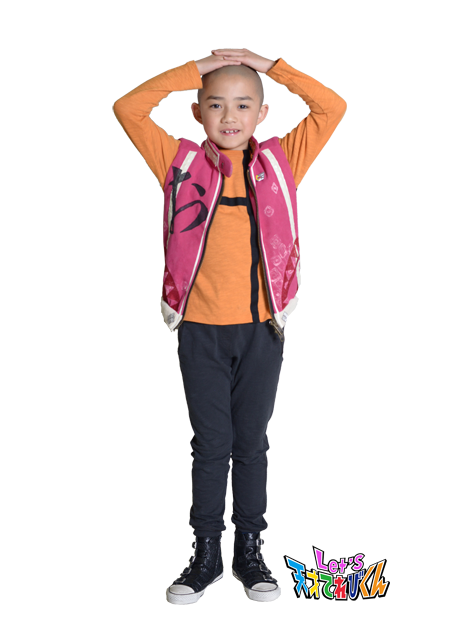
そして次に「さわってみたいなぁ」と思いました。
それは竜心君の頭です。
みんな思った事は同じだったみたいで、私が竜心君を見ると、
かならずだれかが竜心君の頭をさわっています。
みんなに頭をさわられてもいやな顔しない竜心君は、
とてもやさしいてれび戦士です。
そしてみんなのいやしのてれび戦士です！！
これからもずーっとそのままでいてほしいなと思っています。
投稿者:桐畑カレン | 投稿時間:18時45分 | カテゴリ：てれび戦士 | 固定リンク
新てれび戦士参上！［林武尊］
はじめまして！
はじめまして、新小5の林武尊（はやし・たける）です。
ぼくはドッジボールとゲームが大好きです。
僕はこの「Let's天才てれびくん」に出られて本当に幸せです。
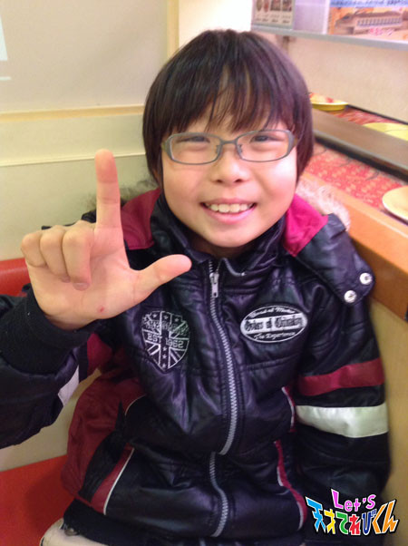
「Let's天才てれびくん」を、
NHKといえば「Let's天才てれびくん」と言わせるような番組に
てれび戦士のみんなと一生けん命作って行きたいです。
てれび戦士の第一印象
次にぼくは桐畑カレンさんのことについて書きます。
桐畑さんの第一印象は人見知りで緊張しちゃうと思ったけど、
本番になると緊張しないで、わかったらすぐ手をあげるし、
しゃべるときは遠慮してしゃべると思ったけど
ぜんぜんそうじゃなくていろいろなことをしっていて
しゃべっていてとても楽しくなり、とても明るい人です。
カレンさんと話すと話がはずんでみんなが笑顔になります。
カレンさんは話すということがすごく上手です。
ぼくも桐畑カレンさんの話で元気が出てきます。
その元気とともに「Let's天才てれびくん」を一生けん命がんばるので、
テレビの前でその姿を見てください。
投稿者:林武尊 | 投稿時間:18時45分 | カテゴリ：てれび戦士 | 固定リンク
新てれび戦士参上！［原田明莉］
はじめまして！
初めまして、小学5年生の原田明莉（はらだ・あかり）です。
「Let's天才てれびくん」、てれび戦士をやらせてもらえることになりました。
「大！天才てれびくん」と大きく変わり、
どのように進んでいくのか、
想像がつかないので、先がとっても楽しみです。
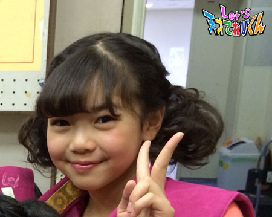
今までよりも、いそがしくなるけど、
勉強はもちろん、大好きな空手も
できるかぎり続けていきたいと思いますので、よろしくお願いします。
てれび戦士の第一印象
ここで、これから一緒にてれび戦士としてがんばっていく仲間を紹介します。
同じ新5年生の林武尊くんです。
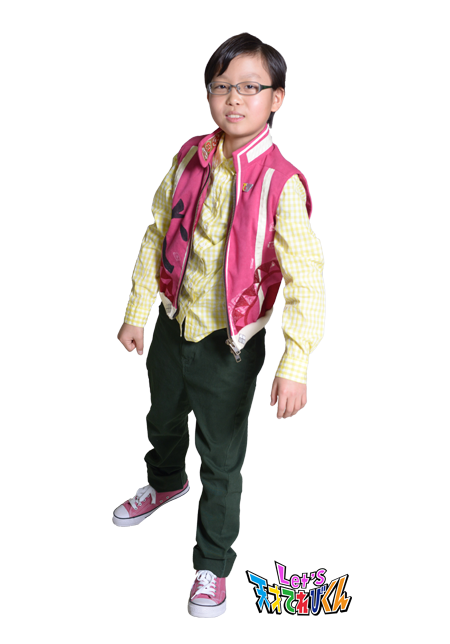
初めて会った時の第一印象は、
明るくて誰とでも仲良くなれそうな子だと感じました。
実際も変顔などしてみんなを楽しませてくれるので…
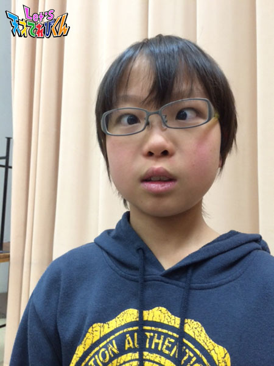
武尊くんがいると明るくなります。
私と武尊くんの他にも10人のてれび戦士がいます。
みんなで仲良く番組を作りたいと思いますので、みなさん、よろしくお願いします。
投稿者:原田明莉 | 投稿時間:18時45分 | カテゴリ：てれび戦士 | 固定リンク
新てれび戦士参上！［小西憧弥］
はじめまして！
はじめまして、4月から5年生になった小西憧弥です。
「憧弥」と書いて「とうや」と読みます。
魚釣り（ルアー釣り）が大・大・大好きで、
日焼け止めをぬりまくって、よく湖に出没しています。
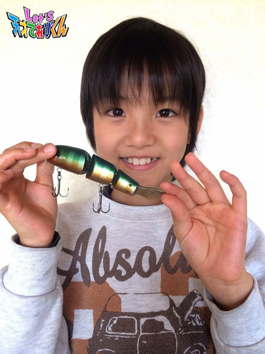
てれび戦士になれて、めちゃくちゃうれしいです。
これから、茶の間戦士のみんなと、てれび戦士のみんなとで、
力をあわせて異次元獣にたちむかっていくぞ！！とはりきってます。
一生けん命がんばるので、よろしくおねがいします。
てれび戦士の第一印象
原田明莉ちゃんにはじめてあったとき、年上かと思いました。
ぼくより背が高くて、しっかりしていたからです。
いつもニコニコしていて、色が白くてかわいいのに、
空手が得意と聞いてびっくり！！
こわい人が来たら、あかりちゃんの後ろに隠れようと思いました。
これから一緒にがんばっていこうね(^_^)
投稿者:小西憧弥 | 投稿時間:18時45分 | カテゴリ：てれび戦士 | 固定リンク
新てれび戦士参上！［飯島緋梨］
はじめまして！
平成26年度、てれび戦士になった飯島緋梨（いいじま・あかり）です。
小学5年生で、好きな教科は図工です。工作を作るのが大好きです。
趣味は、家でネコとゴロゴロする事です。
家には、緋梨が生まれる前からいる黒ネコのにゃうがいます♡。
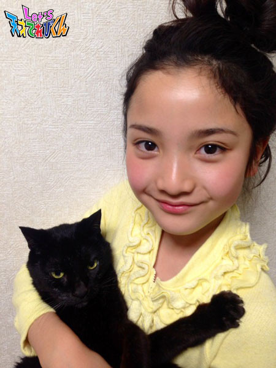
おじいちゃんネコだけどちょっと凶暴でかわいいです。
てれび戦士の第一印象
最初はみんなと仲よくなれるか不安だったけど、
みんな個性的で楽しい人達ばかりなので安心しました。
特に小西憧弥君はおもしろくて…
どんな事を言ってもお笑い芸人さんのように、
すばやくツッコミをして、みんなを笑わせてくれます！
これからみんなと楽しく仲よくいっしょうけんめいがんばりますので、
よろしくお願いします。
投稿者:飯島緋梨 | 投稿時間:18時45分 | カテゴリ：てれび戦士 | 固定リンク
新てれび戦士参上！［瀧澤翼］
はじめまして！
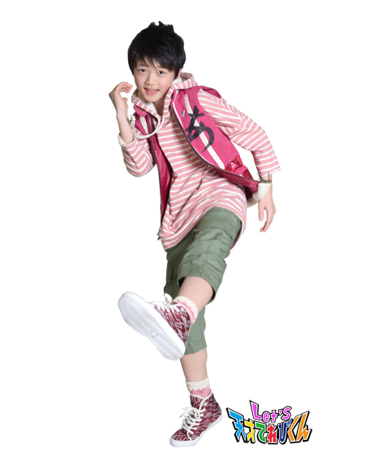
初めまして！ぼくの名前は瀧澤翼（たきざわつばさ）です。
新小学6年生の11歳です。
好きな食べ物はおすしで、中でもホタテは大好物でこれだけは外せません。
特技と趣味はダンスで、曲が聞こえると体が動いてしまうほど
ダンスが大好きです。
学校の勉強で好きな科目は体育と理科。
苦手な科目は算数です。
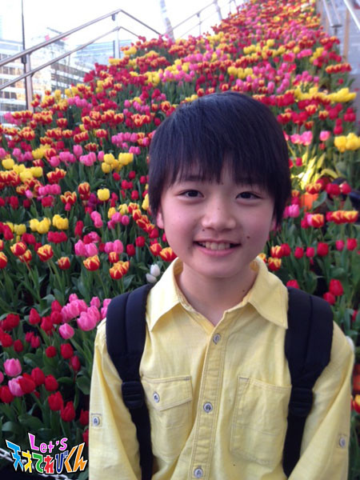
てれび戦士になれてとてもうれしいです。
てれびを見ているみんなと協力して、異次元獣を一生懸命たおすので
いっしょに戦ってもらえると心強いです。
よろしくお願いします。
てれび戦士の第一印象
飯島緋梨ちゃんはすごくものまねが上手です。
特にローラさんのものまねがそっくりで笑ってしまいます。
緋梨ちゃんがものまねをすると、ぼくだけではなくみんなが笑顔になります。
性格はちょっとおとなしくて、何事にも真けんで、たよりになる女の子です。
そんな飯島緋梨ちゃんと仲間になれてうれしいです。
これからもよろしくお願いします！Let's！
投稿者:瀧澤翼 | 投稿時間:18時54分 | カテゴリ：てれび戦士 | 固定リンク
新てれび戦士参上！［齋藤茉日］
はじめまして！
Let's天才てれびくんのてれび戦士になりました。
中学1年生の齋藤茉日です。
「まひる」って読んでね（*^_^*）
私の好きな食べ物は…
これと言って特に無いんだけど、
しいて言うなら「野菜」かな！
きらいな食べ物はまったく無いよ！
趣味とかハマってる物とかコロコロ変わるけど
色々楽しめて、
それはそれでいいですよ～（＾ｕ＾）
楽しく活動していきたいです！
応援して下さい！
よろしくお願いします！
てれび戦士の第一印象
私の「瀧澤翼」の第一印象！
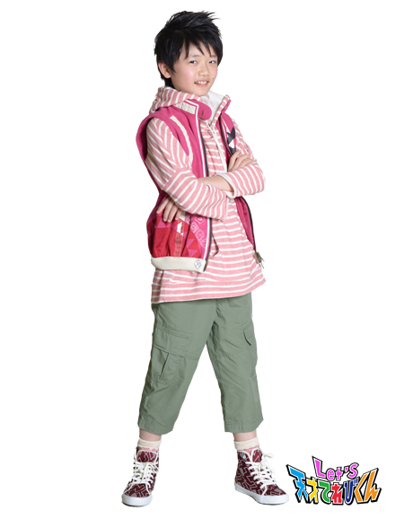
まず1！
中1かと思った！
（実は新小6）
身長が私よりも高くて、初めて話した時の感じとか！
次は2！
たよれそうなお兄さん！？
年は私の1コ下だけど
てれび戦士の中ではたよれるお兄さんキャラ？？
でもふざけた一面もおもしろいよ！
これをまとめると、
見た目はたよれるお兄さん！
でも話すと意外とおもしろい！
第一印象はこんな感じかしら？
てれび戦士みんなで頑張って
どちゃもん探すぞ～！
以上、茉日でした！！
投稿者:齋藤茉日 | 投稿時間:18時45分 | カテゴリ：てれび戦士 | 固定リンク
新てれび戦士参上！［辻村晃佑］
はじめまして！
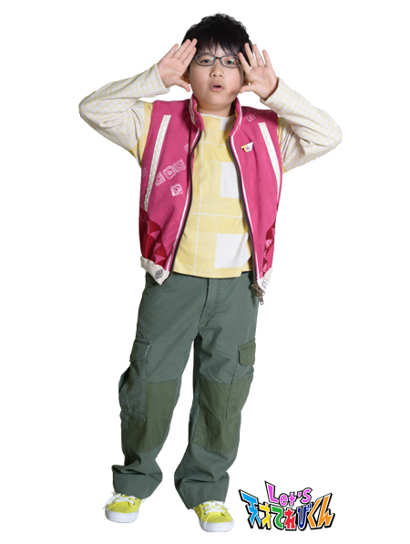
はじめまして、辻村晃佑（つじむら・こうすけ）です。
まさか自分がてれび戦士になるとは思ってもみなかったです。
てれび戦士になる前のぼく。
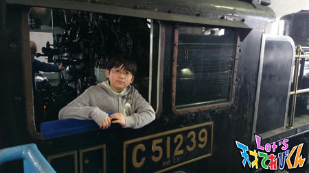
京都・梅小路蒸気機関車館にて
これから、初めての出来事が次々訪れると思いますが、
がんばりますので、
応援よろしくお願いします！
てれび戦士の第一印象
齋藤茉日さんのことですが…
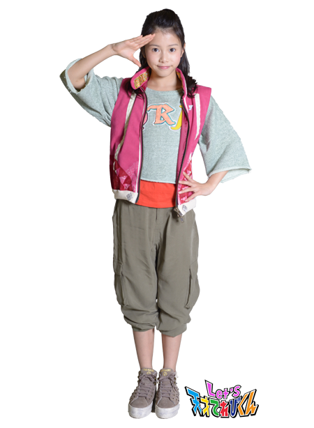
すごく冷静で、
あんまり自分から話してなかったから…
正直こわかったですねww
でも話していると、
すごく明るくて面白い人でしたね。
投稿者:辻村晃佑 | 投稿時間:18時45分 | カテゴリ：てれび戦士 | 固定リンク
ページの一番上へ▲